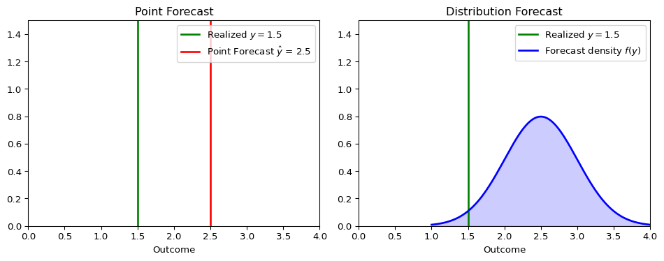
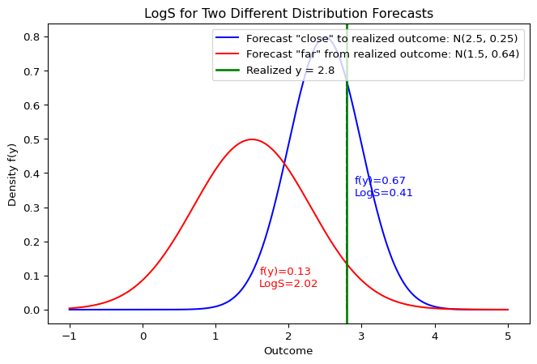
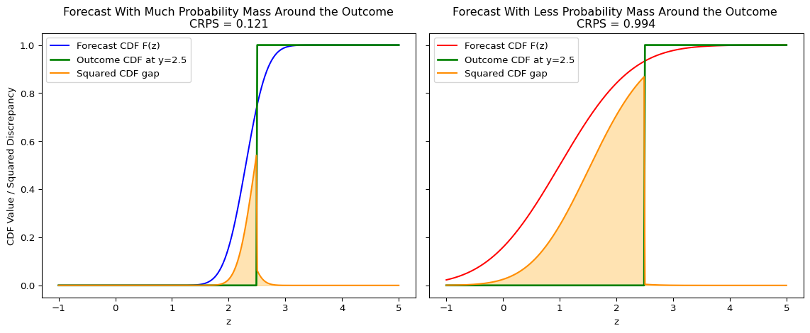
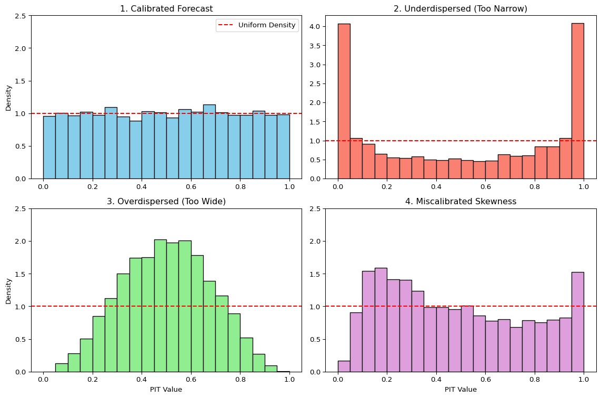

Under active development. A stable version is expected in November 2026. Feedback is welcome by email or via GitHub issues.
3 Evaluating Predictive Distributions
3.1 Overview
In many real-world applications, particularly in economics and finance, predicting a single value (a “point forecast”) is not enough. We often need to understand the full range of possible outcomes and their likelihoods. This requires us to move from point forecasts to distribution forecasts.
For econometricians, this matters whenever decisions depend on tail risk, uncertainty, or the full conditional distribution rather than only the conditional mean. Examples include inflation fan charts, recession-risk assessment, and risk-management quantities such as Value-at-Risk.
This chapter explains how to evaluate such forecasts in a way that rewards honest uncertainty quantification rather than only accurate point predictions.
3.2 Roadmap
- We begin by clarifying the difference between point forecasts and distribution forecasts.
- We then introduce proper scoring rules, the basic tools for evaluating predictive distributions.
- We study the two most important univariate scoring rules in practice: LogS and CRPS.
- We then turn to calibration diagnostics using the Probability Integral Transform (PIT).
- Finally, we connect these ideas back to information theory, especially cross-entropy and KL divergence.
3.3 Distribution Forecasts vs. Point Forecasts
Let’s compare the two approaches:
Point Forecasts:
- Predict a single value, e.g., “tomorrow’s inflation will be 2.5%”.
- This is often the conditional mean or median of the distribution.
- Evaluated using metrics like Mean Squared Error (MSE) or Mean Absolute Error (MAE).
Distribution Forecasts:
- Predict an entire probability distribution for the future outcome, e.g., \(P(Y_{t+1} | \mathcal{F}_t)\).
- Provides a complete picture of uncertainty, including variance, skewness, and tail risks.
- More informative for decision-making, such as risk management or policy analysis.
Applications in Economics:
- Inflation Forecasting: Central banks are interested in the probability of inflation exceeding a certain target, not just the single most likely value.
- Risk Management: Financial institutions need to estimate the distribution of potential losses (e.g., Value-at-Risk at multiple risk levels).
- Policy Analysis: Governments need to understand the range of potential impacts of a new policy under uncertainty.
The figure below illustrates the conceptual difference.
A point forecast provides a single best guess, while a distribution forecast provides a richer view of what might happen.
Evaluation Workflow
In practice, evaluating distribution forecasts usually has two components:
- Scoring rules to rank competing forecast models with a single numerical criterion.
- Calibration diagnostics to understand why a forecast distribution is failing.
LogS and CRPS address the first task. PIT histograms address the second.
3.4 Proper Scoring Rules
To evaluate a distribution forecast, we need a metric that assesses the quality of the entire predicted distribution, given the one outcome that actually occurred. This is the role of scoring rules.
A scoring rule \(S(P, y)\) assigns a numerical score to a forecast distribution \(P\) when the outcome \(y\) is realized, just like MSE assigns an error to a point forecast \(\hat y\) and \(y\).
Definition of Proper Scoring Rules
A scoring rule is considered proper if the forecaster’s expected score is optimized when they report their true belief, i.e. the true data-generating distribution. More precisely, let \(F\) and \(G\) be two distribution forecasts. A scoring rule \(S(P,y)\) that assigns a score to each combination of probability distribution \(P\) and outcome \(y\) is defined to be proper for some space of probability distributions \(\mathcal{P}\) if
\[ \mathbb{E}_{Y \sim F}[S(F,Y)] \leq \mathbb{E}_{Y \sim F}[S(G,Y)] \]
for all \(F, G \in \mathcal{P}\). We call \(S\) strictly proper if the true distribution is the unique optimum.
This is analogous to how the conditional mean is the unique forecast that minimizes the Mean Squared Error. Using proper scoring rules incentivizes honest and accurate forecasting.
For dependent data, properness is still a statement about the conditional distribution being forecast. At each forecast origin \(t\), the reported distribution should be measurable with respect to the information set \(\mathcal{F}_t\) and should target the law of \(Y_{t+1}\mid\mathcal{F}_t\). Averaging proper scores over time is then a way to compare sequential conditional forecasts, but serial correlation in the score differences matters for uncertainty assessment and forecast-comparison tests.
Optional: If you are interested in more technical details, see Gneiting and Raftery (2007).
Misunderstanding Proper Scoring Rules
- Proper doesn’t mean “better” - it means the rule encourages honest reporting
- Different proper scoring rules can rank models differently
- If possible, the choice of scoring rule should align with your specific decision problem
Why Proper Scoring Rules Matter
- They encourage forecasters to be honest and report their true beliefs.
- They provide a principled way to compare the performance of different forecasting models.
- They prevent “gaming” of evaluation metrics that might occur with simpler, ad-hoc measures, see below.
The Gaming Problem with Improper Scoring Rules
Suppose we evaluate forecasters using only empirical coverage of their 90% prediction intervals, or equivalently a miss indicator that equals 0 when the realized outcome falls inside the interval and 1 when it falls outside.
A Gaming Strategy: Given the hit rate evaluation, a strategic forecaster could report an extremely wide interval such as \([-1000,1000]\) for inflation in 90% of forecast origins and an empty or irrelevant interval in the remaining 10%. This mechanically targets 90% coverage while providing almost no useful information.
This would make the hit rate an improper scoring rule. Proper scoring rules include a penalty for uninformative or underconfident forecasts rather than rewarding coverage alone.
Two of the most widely used proper scoring rules are the Logarithmic Score (LogS) and the Continuous Ranked Probability Score (CRPS).
3.5 The Logarithmic Score (LogS)
The Logarithmic Score (or Log Score) evaluates the forecast density at the realized outcome.
Definition: For a forecast with probability density function (PDF) \(f\) and a realized outcome \(y\):
\[\text{LogS}(f, y) = -\log f(y)\]
Properties:
- Lower scores are better.
- It is highly sensitive to tail events and severely penalizes a model that assigns a very low probability to an outcome that actually occurred.
- It requires an explicit forecast density \(f(y)\), which may not always be available.
Log Score: Visual Interpretation
The Log Score directly depends on the height of the density at the realized outcome \(y\). A forecast that assigns a higher probability to the value that actually occurs will receive a better, i.e. lower, score.

Example: Calculating the Log Score
Suppose we forecast that an outcome follows a Normal distribution \(Y \sim \mathcal{N}(\mu=2, \sigma^2=1)\), and the realized value is \(y = 2.5\).
Show the code
import numpy as np
from scipy.stats import norm
mu, sigma = 2, 1
y_obs = 2.5
# Calculate the PDF value at the observed outcome
pdf_val = norm.pdf(y_obs, loc=mu, scale=sigma)
log_score = -np.log(pdf_val)
print(f"PDF value f({y_obs}) = {pdf_val:.4f}")
print(f"Log Score = {log_score:.4f}")PDF value f(2.5) = 0.3521
Log Score = 1.04393.6 The Continuous Ranked Probability Score (CRPS)
The CRPS measures the “distance” between the forecast’s cumulative distribution function (CDF) and the empirical CDF of the outcome.
Definition: For a forecast with CDF \(F\) and a realized outcome \(y\):
\[\text{CRPS}(F, y) = \int_{-\infty}^{\infty} [F(z) - \mathbf{1}\{z \geq y\}]^2 dz\]
where \(\mathbf{1}\{z \geq y\}\) is the Heaviside step function, the CDF of a degenerate predictive distribution that places all probability mass at the realized outcome \(y\).
Visual Interpretation
The CRPS measures the squared difference between the forecast CDF, \(F(z)\), and the empirical CDF of the outcome, which is a step function at \(y\). If the forecast places substantial probability mass near the realization, the shaded area is smaller and the CRPS is better, i.e. lower.

Intuition:
- It generalizes the Mean Absolute Error (MAE) to probabilistic forecasts. If the forecast is a single point, the CRPS reduces to the MAE. Even though it may not be intuitive at first sight given the square inside the integral, one can rewrite the CRPS as follows, \[ CRPS(F,y) = \mathbb{E} |X-y| - \frac{1}{2} \mathbb{E} |X-X'| \quad X,X'\stackrel{iid}{\sim}F. \]
- It considers both the location and the spread of the forecast distribution.
- It can be computed even if you only have samples from the forecast distribution, without needing an explicit density function.
Why CRPS Reduces to MAE for a Point Forecast
If the forecast distribution is degenerate at a point forecast \(\hat y\), then \(X=\hat y\) and \(X'=\hat y\) with probability one. In the representation above,
\[ \mathbb{E}|X-y|=|\hat y-y|, \qquad \mathbb{E}|X-X'|=|\hat y-\hat y|=0. \]
Therefore
\[ \text{CRPS}(F,y)=|\hat y-y|, \]
which is exactly the absolute error.
Examples and Computation
For many standard distributions, the CRPS has a closed-form solution.
When no convenient closed form is available, the sample representation makes CRPS useful in simulation-based forecasting. If \(X_1,\ldots,X_M\) are Monte Carlo draws from the predictive distribution, the expectations in the representation above can be approximated by sample averages. This is especially practical when the model can simulate forecast paths but the predictive density or CDF is analytically inconvenient.
For a Normal Distribution: If the forecast is \(F = \mathcal{N}(\mu, \sigma^2)\), the CRPS is:
\[\text{CRPS}(\mathcal{N}(\mu, \sigma^2), y) = \sigma\left[z\left(2\Phi(z) - 1\right) + 2\phi(z) - \frac{1}{\sqrt{\pi}}\right]\]
where \(z = \frac{y - \mu}{\sigma}\), \(\Phi\) is the standard normal CDF, and \(\phi\) is the standard normal PDF.
More closed-form expressions can be found in Jordan, Krüger, and Lerch (2019).
Example: Calculating the CRPS
Using the same forecast \(Y \sim \mathcal{N}(\mu=2, \sigma^2=1)\) and outcome \(y = 2.5\) as above for the log score:
Show the code
# Using the properscoring library for convenience
# pip install properscoring
import properscoring as ps
mu, sigma = 2, 1
y_obs = 2.5
crps_score = ps.crps_gaussian(y_obs, mu=mu, sig=sigma)
print(f"CRPS Score = {crps_score:.4f}")CRPS Score = 0.33143.7 Comparing LogS vs. CRPS
Both are strictly proper scoring rules, but they have different sensitivities.
| Aspect | Logarithmic Score (LogS) | Continuous Ranked Probability Score (CRPS) |
|---|---|---|
| Input Required | Forecast PDF, \(f(y)\) | Forecast CDF, \(F(y)\) (or samples) |
| Sensitivity | sensitive to tail performance; one bad miss can dominate the average score. | Less sensitive to outliers; focuses on the central tendency and overall shape. |
| Numerical Stability | Can be unstable if \(f(y)\) is close to zero. | Generally very stable. |
| Measurement Error Sensitivity | High | Low |
Practical Rule of Thumb
- Use LogS when tail behavior is central and a full predictive density is available.
- Use CRPS when you want a more robust summary of overall distribution quality or when forecasts are naturally available through CDFs or simulation draws.
In macroeconomic and financial forecasting, it is often informative to report both.
Question for Reflection
If a central bank mostly cares about the probability of very high inflation, would you expect LogS and CRPS to reward the same forecast model? Which score is more aligned with tail-sensitive evaluation, and why?
Suggested Answer
Not necessarily. LogS evaluates the density assigned to the realized outcome and can strongly penalize a model that assigns too little probability to rare high-inflation realizations. CRPS integrates CDF errors over the full support and is often less dominated by one extreme realization. Within the two scores introduced in this chapter, LogS is therefore more aligned with tail-sensitive evaluation, while CRPS is more useful as a robust summary of overall distributional accuracy.
3.8 Assessing Calibration with the Probability Integral Transform
Beyond comparing models with scoring rules, we often want to diagnose how a model’s predictive distributions are failing. A powerful tool for this is the Probability Integral Transform (PIT).
The PIT is based on a fundamental statistical result: if a continuous random variable \(Y\) is drawn from a distribution with cumulative distribution function (CDF) \(F\), then the transformed random variable \(U = F(Y)\) follows a Uniform distribution on the interval [0, 1].
In forecasting, we can apply this principle to a sequence of forecasts and outcomes. If our model produces a series of predictive CDFs \(F_t\) for outcomes \(y_t\), and if each conditional distribution is correctly specified relative to the forecast-origin information set, then the resulting PIT values \(u_t = F_t(y_t)\) should be Uniform(0, 1). In time-series applications, it is useful to distinguish marginal calibration from serial independence: a PIT histogram can look uniform even when the PIT sequence remains autocorrelated. Conditional calibration requires both the right marginal shape and no predictable pattern left in the PIT sequence.
We can visually check this by plotting a histogram of the PIT values. The shape of the histogram reveals systematic biases in the forecast distributions:
- Calibrated Forecasts: If the forecasts are well-calibrated, the PIT histogram will be approximately flat, resembling a uniform distribution.
- Underdispersed Forecasts (Too Narrow): If the forecast distributions are consistently too narrow, the realized outcomes will frequently fall in the tails. This leads to PIT values clustering near 0 and 1, creating a U-shaped histogram. The model is “overconfident” and surprised too often.
- Overdispersed Forecasts (Too Wide): If the forecast distributions are consistently too wide, the realized outcomes will tend to fall in the center of the distributions. This leads to PIT values clustering around 0.5, creating a hump-shaped histogram. The model is “underconfident” in its uncertainty.
- Miscalibrated Skewness: If the histogram is asymmetric or tilted, it indicates a mismatch in skewness. For example, an upward-sloping histogram (more values near 1) suggests the model’s forecasts are not sufficiently right-skewed compared to the outcomes. The model is systematically surprised by large positive outcomes.

The PIT histogram is a powerful diagnostic tool. While a proper scoring rule gives a single number to rank models, the PIT histogram provides qualitative insights into why a model’s predictive distributions might be deficient, guiding further model improvement. For dependent data, it should be paired with serial-dependence diagnostics on the PIT sequence; the broader distinction between marginal and conditional coverage reappears in the chapter on conformal prediction.
3.9 Connection to Information Theory
There is a deep connection between proper scoring rules and the concepts of entropy and cross-entropy discussed in the Information Theory chapter. This link is most direct for the Logarithmic Score.
Let’s assume there is a true, underlying data-generating distribution with density \(p(y)\), and our model produces a forecast distribution with density \(q(y)\).
The Log Score for a single observation \(y\) is:
\[\text{LogS}(q, y) = -\log q(y)\]
To evaluate the quality of our forecasting model \(q\) in general, we consider its expected score under the true distribution \(p\):
\[ \mathbb{E}_{Y \sim p}[\text{LogS}(q, Y)] = \mathbb{E}_{Y \sim p}[-\log q(Y)] = -\int p(y) \log q(y) \,dy \]
This expression is exactly the definition of cross-entropy \(\mathbb{H}_{ce}(p, q)\) between the true distribution \(p\) and the forecast distribution \(q\).
3.10 Minimizing Log Score is Minimizing KL Divergence
Recall the fundamental relationship from information theory:
\[ \underbrace{\mathbb{H}_{ce}(p, q)}_{\text{Expected Log Score}} = \underbrace{\mathbb{H}(p)}_{\text{Entropy of True Process}} + \underbrace{D_{\text{KL}}(p \parallel q)}_{\text{KL Divergence}} \]
This identity gives us a powerful interpretation:
- Entropy \(\mathbb{H}(p)\): This is the irreducible uncertainty inherent in the true data-generating process. It represents the best possible average score we could ever achieve, even with a perfect model where \(q=p\).
- KL Divergence \(D_{\text{KL}}(p \parallel q)\): This is the “penalty” or extra loss we incur because our model \(q\) is not a perfect representation of the true process \(p\). Since KL divergence is always non-negative (\(D_{\text{KL}} \geq 0\)), it represents the room for improvement in our model. This is very closely related to our argument in the section on Information Theory.
Key Insight
Minimizing the average Logarithmic Score of a forecast model is equivalent to minimizing the KL Divergence between the model’s predictive distribution (\(q\)) and the true data-generating distribution (\(p\)). This provides a theoretical foundation for using the Log Score in model selection and evaluation.
Advanced: CRPS and Generalized Entropy
CRPS also admits an interpretation in terms of a generalized entropy. For a forecast CDF \(G\) and true CDF \(F\), the CRPS is
\[\text{CRPS}(G,y)=\int_{-\infty}^{\infty}\big(G(z)-\mathbf{1}\{z \geq y\}\big)^2\,dz.\]
Taking expectation under \(Y \sim F\),
\[ \begin{aligned} \mathbb{E}_{Y\sim F}[\text{CRPS}(G,Y)] &= \int \mathbb{E}\big[(G(z)-\mathbf{1}\{z \geq Y\})^2\big]\,dz \\ &= \int (G(z)-F(z))^2\,dz + \underbrace{\int F(z)(1-F(z))\,dz}_{\mathbb H_{\text{CRPS}}(F)}. \end{aligned} \]
where we used \(\mathbb E[\mathbf{1}\{z \geq Y\}]=F(z)\) and \(\operatorname{Var}(\mathbf{1}\{z \geq Y\})=F(z)(1-F(z))\).
- The term \(\mathbb H_{\text{CRPS}}(F)=\int F(z)(1-F(z))\,dz\) is the generalized “CRPS entropy” of \(F\).
- The excess risk \[D_{\text{CRPS}}(F,G)=\int_{-\infty}^{\infty} (F(z)-G(z))^2\,dz\] is the Cramér–von Mises distance, showing CRPS is strictly proper (minimized at \(G(x)=F(x)\) for all \(x\)).
Equivalent representation:
\[\mathbb H_{\text{CRPS}}(F)=\tfrac{1}{2}\,\mathbb{E}|X-X'|,\quad X,X'\stackrel{iid}{\sim}F,\]
and
\[\text{CRPS}(F,y)=\mathbb{E}|X-y|-\tfrac{1}{2}\mathbb{E}|X-X'| \quad X,X'\stackrel{iid}{\sim}F.\]
The last expression can be used to define a multivariate CRPS analogue called “Energy Score”.
3.11 Beyond LogS and CRPS
Note
- Energy Score for multivariate distributions Székely (2003)
- Diebold-Mariano tests for comparing forecast performance (Diebold and Mariano 1995)
- Quantile scores for specific percentiles of interest (Gneiting and Raftery 2007)
3.12 Summary
Key Takeaways
- Distribution forecasts are essential when economic or financial decisions depend on uncertainty, tail risk, or the full conditional distribution.
- Proper scoring rules are needed because they reward honest reporting of predictive uncertainty rather than only point accuracy.
- LogS is especially useful when tail behavior matters and a full density is available, while CRPS is often more robust and easier to use with CDFs or simulated forecasts.
- PIT histograms complement scoring rules by diagnosing whether forecast distributions are too narrow, too wide, or misspecified in skewness.
- Information theory provides the conceptual foundation: minimizing average LogS is equivalent to minimizing cross-entropy, hence KL divergence up to the irreducible entropy term.
Common Pitfalls
- Ranking models only by point-forecast accuracy when the decision problem depends on the full predictive distribution.
- Treating a good PIT histogram as sufficient evidence that a model is optimal, even when its scoring-rule performance is weak.
- Using LogS without recognizing how strongly it punishes tail misspecification and near-zero assigned density.
- Interpreting CRPS as “just another loss function” rather than a proper scoring rule for full predictive distributions.
- Forgetting that calibration diagnostics must be applied out of sample, not on the estimation sample.
3.13 Exercises
Exercise 3.1: Expected Log Score Under Gaussian Misspecification
Suppose the true predictive distribution is
\[ p(y)=\mathcal{N}(\mu_0,\sigma_0^2), \]
while a forecaster reports the Gaussian predictive density
\[ q(y)=\mathcal{N}(\mu,\sigma^2), \qquad \sigma^2>0. \]
- Show that the logarithmic score for a realized outcome \(y\) can be written as \[ \mathrm{LogS}(q,y)=\frac{1}{2}\log(2\pi\sigma^2)+\frac{(y-\mu)^2}{2\sigma^2}. \]
- Compute the expected log score under the true distribution \(p\) and show that \[ \mathbb{E}_{Y\sim p}[\mathrm{LogS}(q,Y)] = \frac{1}{2}\log(2\pi\sigma^2) +\frac{\sigma_0^2+(\mu_0-\mu)^2}{2\sigma^2}. \]
- Show that the expected log score is minimized at \[ \mu=\mu_0, \qquad \sigma^2=\sigma_0^2. \]
- Explain why this differs from point-forecast evaluation with MSE, where only the conditional mean matters.
Exam level. The exercise formalizes why LogS evaluates the entire predictive distribution, not just its center.
Hint for Part 1
Start from the Gaussian density formula and take minus the logarithm.
Hint for Part 2
Use
\[ \mathbb{E}\big[(Y-\mu)^2\big] = \operatorname{Var}(Y)+\big(\mathbb{E}[Y]-\mu\big)^2. \]
Hint for Part 3
Differentiate the expression from Part 2 first with respect to \(\mu\), then with respect to \(\sigma^2\).
Hint for Part 4
Under squared-error loss, the optimal point forecast is the conditional mean. Under LogS, both location and uncertainty enter the criterion.
Solution
Part 1: Writing the Gaussian Log Score
For a Gaussian predictive density,
\[ q(y)=\frac{1}{\sqrt{2\pi\sigma^2}} \exp\left(-\frac{(y-\mu)^2}{2\sigma^2}\right). \]
Taking minus the logarithm gives
\[ \mathrm{LogS}(q,y) = \frac{1}{2}\log(2\pi\sigma^2)+\frac{(y-\mu)^2}{2\sigma^2}. \]
Part 2: Taking the Expected Log Score
Take expectation under \(Y\sim \mathcal{N}(\mu_0,\sigma_0^2)\):
\[ \mathbb{E}_{Y\sim p}[\mathrm{LogS}(q,Y)] = \frac{1}{2}\log(2\pi\sigma^2)+\frac{1}{2\sigma^2}\mathbb{E}\big[(Y-\mu)^2\big]. \]
Now
\[ \mathbb{E}\big[(Y-\mu)^2\big] = \operatorname{Var}(Y)+(\mathbb{E}[Y]-\mu)^2 = \sigma_0^2+(\mu_0-\mu)^2. \]
Therefore
\[ \mathbb{E}_{Y\sim p}[\mathrm{LogS}(q,Y)] = \frac{1}{2}\log(2\pi\sigma^2) +\frac{\sigma_0^2+(\mu_0-\mu)^2}{2\sigma^2}. \]
Part 3: Optimizing over Mean and Variance
First differentiate with respect to \(\mu\):
\[ \frac{\partial}{\partial \mu} \mathbb{E}_{Y\sim p}[\mathrm{LogS}(q,Y)] = \frac{\mu-\mu_0}{\sigma^2}. \]
So the optimum in \(\mu\) is
\[ \mu=\mu_0. \]
Substituting this into the expected score gives
\[ \frac{1}{2}\log(2\pi\sigma^2)+\frac{\sigma_0^2}{2\sigma^2}. \]
Differentiate with respect to \(\sigma^2\):
\[ \frac{\partial}{\partial \sigma^2} \left( \frac{1}{2}\log(2\pi\sigma^2)+\frac{\sigma_0^2}{2\sigma^2} \right) = \frac{1}{2\sigma^2}-\frac{\sigma_0^2}{2(\sigma^2)^2}. \]
Setting this equal to zero yields
\[ \sigma^2=\sigma_0^2. \]
Hence the expected log score is minimized at the true mean and the true variance.
Part 4: Why LogS Goes Beyond Point Forecasts
Point-forecast evaluation with MSE only asks for the optimal point forecast, which is the conditional mean. It does not reward or penalize the predictive variance at all.
By contrast, LogS evaluates the full predictive density. A forecaster can get the mean right but still be penalized for reporting a variance that is too small or too large. That is why LogS is suitable for distribution forecasts rather than only point forecasts.
Exercise 3.2: Why CRPS Is Proper
Let \(F\) denote the true predictive CDF, let \(G\) denote a forecast CDF, and let \(Y\sim F\). Recall the CRPS:
\[ \mathrm{CRPS}(G,y)=\int_{-\infty}^{\infty}\big(G(z)-\mathbf{1}\{z\ge y\}\big)^2\,dz. \]
- Show that \[ \mathbb{E}_{Y\sim F}[\mathrm{CRPS}(G,Y)] = \int_{-\infty}^{\infty}\left[\big(G(z)-F(z)\big)^2+F(z)\big(1-F(z)\big)\right]\,dz. \]
- Show that the expected CRPS is minimized at \(G=F\).
- Prove that for a point forecast represented by the degenerate CDF \(G(z)=\mathbf{1}\{z\ge \hat y\}\), \[ \mathrm{CRPS}(G,y)=|\hat y-y|. \]
Exam level. The exercise proves propriety and then shows why CRPS reduces to MAE for a degenerate point forecast.
Hint for Part 1
Take expectation inside the integral, expand the square, and use
\[ \mathbb{E}[\mathbf{1}\{z\ge Y\}] = F(z), \qquad \mathbb{E}[\mathbf{1}\{z\ge Y\}^2] = F(z). \]
Hint for Part 2
In the expression from Part 1, only one integral depends on \(G\).
Hint for Part 3
For the degenerate forecast, the integrand is zero on one side of the interval between \(\hat y\) and \(y\), and one on the other side.
Solution
Part 1: Expected CRPS Decomposition
By definition,
\[ \mathrm{CRPS}(G,Y)=\int_{-\infty}^{\infty}\big(G(z)-\mathbf{1}\{z\ge Y\}\big)^2\,dz. \]
Taking expectation under \(Y\sim F\) gives
\[ \mathbb{E}_{Y\sim F}[\mathrm{CRPS}(G,Y)] = \int_{-\infty}^{\infty}\mathbb{E}\Big[\big(G(z)-\mathbf{1}\{z\ge Y\}\big)^2\Big]\,dz. \]
Expand the square:
\[ \big(G(z)-\mathbf{1}\{z\ge Y\}\big)^2 = G(z)^2-2G(z)\mathbf{1}\{z\ge Y\}+\mathbf{1}\{z\ge Y\}. \]
Taking expectations yields
\[ \mathbb{E}\Big[\big(G(z)-\mathbf{1}\{z\ge Y\}\big)^2\Big] = G(z)^2-2G(z)F(z)+F(z). \]
Now add and subtract \(F(z)^2\):
\[ G(z)^2-2G(z)F(z)+F(z)^2+F(z)-F(z)^2. \]
Therefore
\[ \mathbb{E}\Big[\big(G(z)-\mathbf{1}\{z\ge Y\}\big)^2\Big] = \big(G(z)-F(z)\big)^2+F(z)\big(1-F(z)\big). \]
Substituting this into the integral gives
\[ \mathbb{E}_{Y\sim F}[\mathrm{CRPS}(G,Y)] = \int_{-\infty}^{\infty}\big(G(z)-F(z)\big)^2\,dz + \int_{-\infty}^{\infty}F(z)\big(1-F(z)\big)\,dz. \]
Part 2: Propriety of CRPS
The second integral depends only on the true distribution \(F\). So the only term depending on the forecast \(G\) is
\[ \int_{-\infty}^{\infty}\big(G(z)-F(z)\big)^2\,dz, \]
which is nonnegative and equals zero if and only if \(G(z)=F(z)\) for all \(z\). Hence the expected CRPS is minimized at the true forecast distribution \(G=F\).
Part 3: Degenerate Forecasts and Absolute Error
Now let
\[ G(z)=\mathbf{1}\{z\ge \hat y\}. \]
Then
\[ \mathrm{CRPS}(G,y) = \int_{-\infty}^{\infty}\big(\mathbf{1}\{z\ge \hat y\}-\mathbf{1}\{z\ge y\}\big)^2\,dz. \]
If \(\hat y<y\), the integrand equals 1 exactly on the interval \([\hat y,y)\) and 0 elsewhere, so
\[ \mathrm{CRPS}(G,y)=y-\hat y. \]
If \(\hat y>y\), the integrand equals 1 exactly on \([y,\hat y)\), so
\[ \mathrm{CRPS}(G,y)=\hat y-y. \]
Therefore in all cases,
\[ \mathrm{CRPS}(G,y)=|\hat y-y|. \]
So CRPS reduces to the absolute error for a degenerate point forecast.
Exercise 3.3: PIT Under Dispersion Misspecification
Suppose the true distribution is standard normal:
\[ Y\sim \mathcal{N}(0,1). \]
Suppose the forecaster reports the Gaussian predictive CDF
\[ F_\sigma(y)=\Phi\left(\frac{y}{\sigma}\right), \qquad \sigma>0, \]
where \(\Phi\) and \(\phi\) denote the standard normal CDF and PDF.
Define the PIT value by
\[ U=F_\sigma(Y). \]
- Show that for any \(u\in(0,1)\), \[ \mathbb{P}(U\le u)=\Phi\big(\sigma\,\Phi^{-1}(u)\big). \] and differentiate this expression to show that the PIT density is \[ f_U(u) = \sigma\, \frac{\phi\big(\sigma\Phi^{-1}(u)\big)}{\phi\big(\Phi^{-1}(u)\big)}, \qquad 0<u<1. \]
- Show that if \(\sigma=1\), then \(U\sim \mathrm{Uniform}(0,1)\).
- Show that \[ f_U(u)=\sigma\exp\left(\frac{1-\sigma^2}{2}\big(\Phi^{-1}(u)\big)^2\right). \] Use this to explain why the PIT histogram is U-shaped when \(\sigma<1\) and hump-shaped when \(\sigma>1\).
Exam level. This exercise turns the usual PIT intuition into an explicit distributional calculation.
Hint for Part 1
Use that \(\Phi\) is strictly increasing:
\[ U\le u \quad\Longleftrightarrow\quad \Phi\left(\frac{Y}{\sigma}\right)\le u. \]
Differentiate \(\Phi(\sigma \Phi^{-1}(u))\) using the chain rule and
\[ \frac{d}{du}\Phi^{-1}(u)=\frac{1}{\phi(\Phi^{-1}(u))}. \]
Hint for Part 2
Substitute \(\sigma=1\) into the CDF or density from Parts 1-2.
Hint for Part 3
Write
\[ \phi(z)=\frac{1}{\sqrt{2\pi}}e^{-z^2/2} \]
and simplify the ratio.
Solution
Part 1: Deriving the PIT Distribution
Since \(\Phi\) is strictly increasing,
\[ U\le u \quad\Longleftrightarrow\quad \Phi\left(\frac{Y}{\sigma}\right)\le u \quad\Longleftrightarrow\quad \frac{Y}{\sigma}\le \Phi^{-1}(u) \quad\Longleftrightarrow\quad Y\le \sigma \Phi^{-1}(u). \]
Therefore
\[ \mathbb{P}(U\le u)=\mathbb{P}\big(Y\le \sigma\Phi^{-1}(u)\big) = \Phi\big(\sigma\Phi^{-1}(u)\big). \]
Differentiate the CDF:
\[ f_U(u)=\frac{d}{du}\Phi\big(\sigma\Phi^{-1}(u)\big). \]
By the chain rule,
\[ f_U(u) = \phi\big(\sigma\Phi^{-1}(u)\big)\cdot \sigma \cdot \frac{d}{du}\Phi^{-1}(u). \]
Using
\[ \frac{d}{du}\Phi^{-1}(u)=\frac{1}{\phi(\Phi^{-1}(u))}, \]
we obtain
\[ f_U(u) = \sigma\, \frac{\phi\big(\sigma\Phi^{-1}(u)\big)}{\phi\big(\Phi^{-1}(u)\big)}. \]
Part 2: Recovering Uniformity Under Correct Specification
If \(\sigma=1\), then from Part 1
\[ \mathbb{P}(U\le u)=\Phi(\Phi^{-1}(u))=u. \]
So \(U\) has the Uniform\((0,1)\) distribution.
Part 3: Why Dispersion Errors Distort the PIT Histogram
Let \(z=\Phi^{-1}(u)\). Then
\[ f_U(u) = \sigma\frac{\phi(\sigma z)}{\phi(z)} = \sigma\frac{\frac{1}{\sqrt{2\pi}}e^{-\sigma^2 z^2/2}} {\frac{1}{\sqrt{2\pi}}e^{-z^2/2}} = \sigma\exp\left(\frac{1-\sigma^2}{2}z^2\right). \]
Hence
\[ f_U(u)=\sigma\exp\left(\frac{1-\sigma^2}{2}\big(\Phi^{-1}(u)\big)^2\right). \]
If \(\sigma<1\), then \(1-\sigma^2>0\), so the exponent is positive and grows with \(|\Phi^{-1}(u)|\). Therefore the density is large near the edges \(u\approx 0\) and \(u\approx 1\), which gives a U-shaped PIT histogram. This corresponds to an underdispersed forecast.
If \(\sigma>1\), then \(1-\sigma^2<0\), so the density is damped in the tails and relatively larger near the center. This gives a hump-shaped PIT histogram, corresponding to an overdispersed forecast.
References
Diebold, Francis X, and Robert S Mariano. 1995. “Comparing predictive accuracy.” Journal of Business and Economic Statistics 13 (3): 253–63. https://doi.org/10.1198.
Gneiting, Tilmann, and Adrian E. Raftery. 2007. “Strictly proper scoring rules, prediction, and estimation.” Journal of the American Statistical Association 102 (477): 359–78. https://doi.org/10.1198/016214506000001437.
Jordan, Alexander, Fabian Krüger, and Sebastian Lerch. 2019. “Evaluating probabilistic forecasts with scoringRules.” Journal of Statistical Software 90 (12): 1–37. https://doi.org/10.18637/jss.v090.i12.
Székely, Gábor J. 2003. “\(E\)-Statistics: The Energy of Statistical Samples.” Technical Report 03-05. Bowling Green State University, Department of Mathematics; Statistics.